今日主要行東北面嘅山谷，Güllüdere Valley (Rose Valley)，經 Çavuşin 村莊，到 PASABAG (Monks Valley)，再去 Zelve，然後搭車返嚟。
根據噚日嘅經驗，都預咗會蕩失路，行錯路，甚至搵唔到路。
果然係搵唔到入口，雖然所謂嘅入口只係一個指示牌，但點解我連呢啲嘢都睇唔到嘅呢......結果又係見路就行，穿過一個墳場，hostel 提供嘅簡單地圖上的確係有個墳場呀。
不過之後都冇乜意思，隨意咁行，風景好好睇，開始見到一啲噚日睇唔到嘅地勢，例如一啲好似菇咁嘅石。見到有人踩單車，至醒起可以租單車，不過上上落落都唔係好玩。入咗幾個有洞嘅大石，有一個有條長梯可以上去中間度門，點知一推開門裏面有水壼有床，好似誤闖民居咁。都唔知自己去咗邊，行行下終於見到有舊石寫住 Red Valley，但有啲又寫住 Rose Valley。
行到一間賣鮮果汁嘅舖頭，成 10 TL 一杯細果汁，老闆話今日冇人幫襯過呀，好可憐，就買咗一杯，順便問下路，至肯定咗其實仲未去到 Rose Valley…
但係跟住老闆指嘅方向行，嗰個谷應該就係 Rose Valley，但係都係搵唔到嗰啲石教堂呢，應該話係睇咗幾座有洞嘅大石但唔肯定，因為嗰啲斜路好滑，所以有啲路都唔敢行，行到一個好似盡頭嘅地方就返去果汁店，行另一條路去 Çavuşin，老闆仲問我谷裏面有冇其他人，我話冇咯，然後佢似想收檔走人咁款。
行去 Çavuşin 嘅路中見到一啲荒廢咗嘅檔賣咖啡，心諗呢度以前都幾旺架喎。响一啲分支路，至見到一啲正式嘅路牌，仲見到原來有分 Güllüdere (Rose) I 和 II 嘅路，其實我想睇嘅石教堂係咪响第二條路……不過算啦，都晏。去到 Çavuşin 搵間餐廳飲下嘢坐下。
原來 Çavuşin 都有座大石山，好多洞屋，係以前嘅住屋，可以行上去。我行上去睇風景，又去望下通去 PASABAG 嘅路，哇哈哈，我又再要犯响 Uçhisar 同樣嘅錯喇，就係自己搵路同埋偏要行另外嘅路，明明地圖路線是由 Çavuşin 墳場後面開始嘅，我就由呢度直接向下行。
最慘係其實我都有問過幾個當地人，佢哋都係叫我行去呢邊架，又話墳場嗰邊係返去 Göreme。然後當然又行錯路啦。不過這條路經過嘅地勢都好壯麗。行去到 Çavuşin 嘅農田區，見到一個老婆婆同一個細路女，我問完路問佢可唔可以影佢哋相，個阿婆唔肯，但就叫我影個細路女喎，點解細路就影得嘅？
好吧，問過些農夫去 PASABAG 他們也是指了我去那些谷地，應該點都行到過去，但行了幾條路，來來回回，都是不通，是有一條路似樣的，但是，先要上谷的較高位置，條路好斜，雖然是上斜，但我的鞋仍然是不行，上兩步就滑下來。沒辦法了。
然後回村去，遇到一個後生仔，騎著電單車，15 TL 載我去 PASABAG，原來好鬼近，不過首先你要懂路，而且走的不是行山的路。
原來 PASABAG 是個旅遊勝地，因為見到有一兩輛旅遊巴停著，而不遠處還有個大得好緊要的停車場，我想，曾經這裏必定滿是旅遊巴。PASABAG 是有些一支支菇形石的地方，我看完這裏又試想行山去 Zelve 了，然後上到去 PASABAG 後的山，一看，看回去 Çavuşin，就覺得很奇怪，究竟如果要由 Çavuşin 行山路過來，是走什麼路？
想來想去，最大可能，就真的是山路了，是谷頂的路，但我一看，那些小路，那些斜路，心想我都應該行不了的了。然後再看看去 Zelve 的，也是一樣，是要兜一兜上去的啦，不然就是向下行回平路了。
都四時了，Zelve 的 open-air museum 好像關六時，就行下面的路算了。
Zelve 又是好近，去到買票的地方，在旁坐著的人向我問好，我向他問好，他回答不好，我問何解，他說沒顧客。Zelve 的 museum 也是那種 barcode scan 的入閘，應該可以用 museum pass，所以如果我買的是全國那款 pass 就勁正。
而這個 museum，非常讚，三個山谷，舖好了一條單程路，指引清晰，差不多每個地方外都有簡介。第三個谷中的一條幾十米的隧道封了，不過仍然可以繞過去另一面，另一面的盡頭是山路通去另外的地方。
離開這裏，在外面的食店吃 pancake 和喝 Ayran，pancake 是即時用一個圓圓的金屬板煮的，而 Ayran 是當地的乳酪飲品，通常周街都可買的是工廠製好一杯杯膠杯的，而如果在一些餐廳叫 Ayran 是用一些金屬杯裝著給你的，多數是自家製的乳酪飲。
坐 dolmus 回 Göreme，3 TL。行去 octogar 買後晚去 URFA 的票，好順利，沒有不許我買。上山看完日落之後回 hostel，hostel 正門前是一條無人小巷，有一間很細小的食店，只有幾樣嘢食，寫著 mum’s meal，入去沒人，但真的有個阿媽在廚房，我叫了湯和雞飯，還叫了她自己製的酒，我根本不喝酒所以只要半杯，但這酒我竟然喝得了。
這裏的東西好好味。走時她說 güle güle，原來是 good bye 的意思。
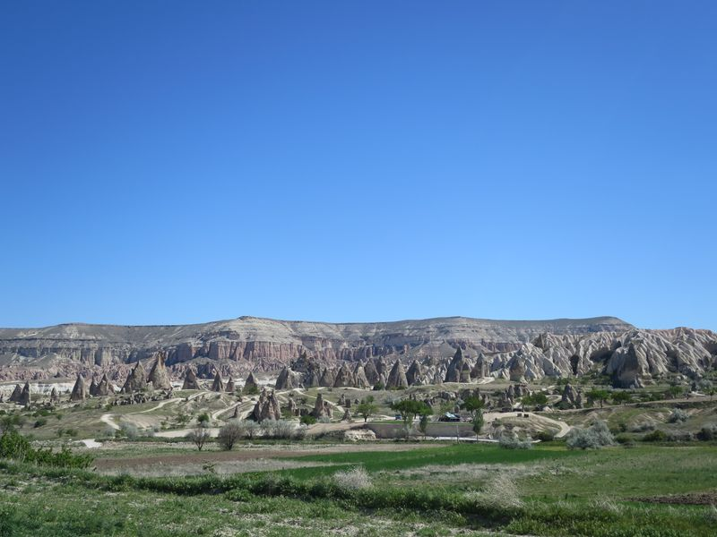
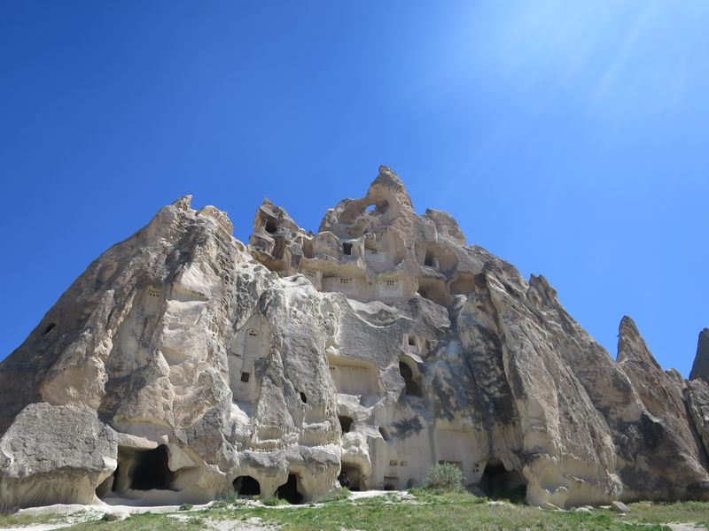
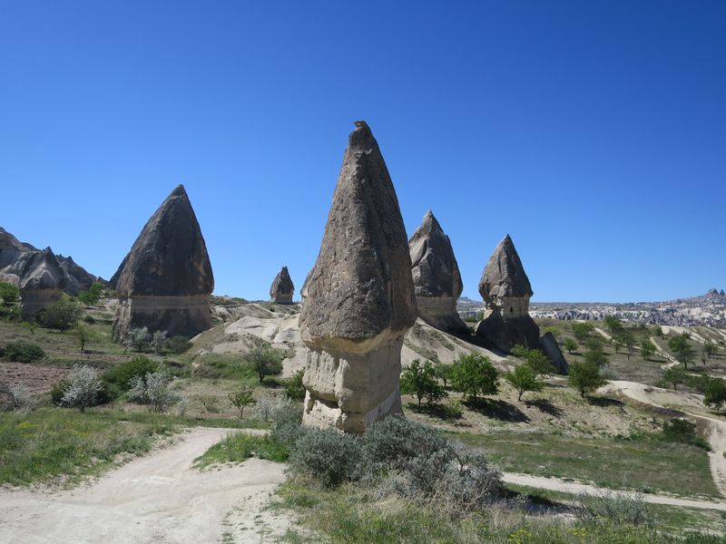
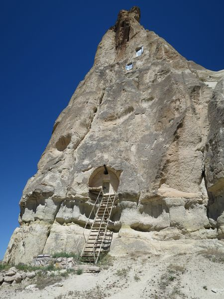
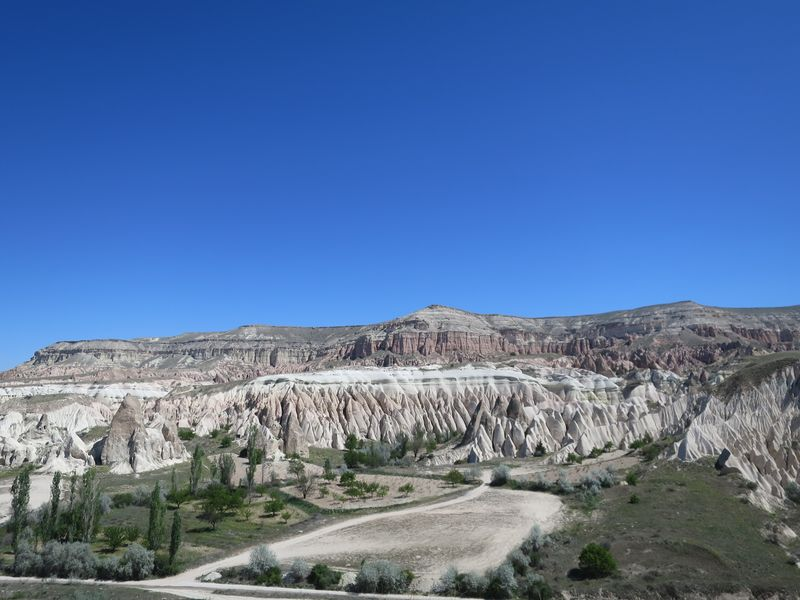
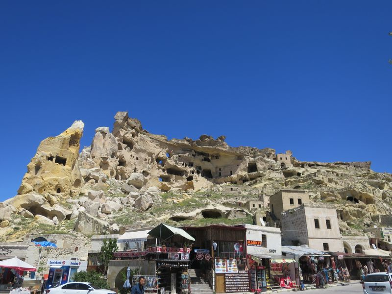Çavuşin Old Village
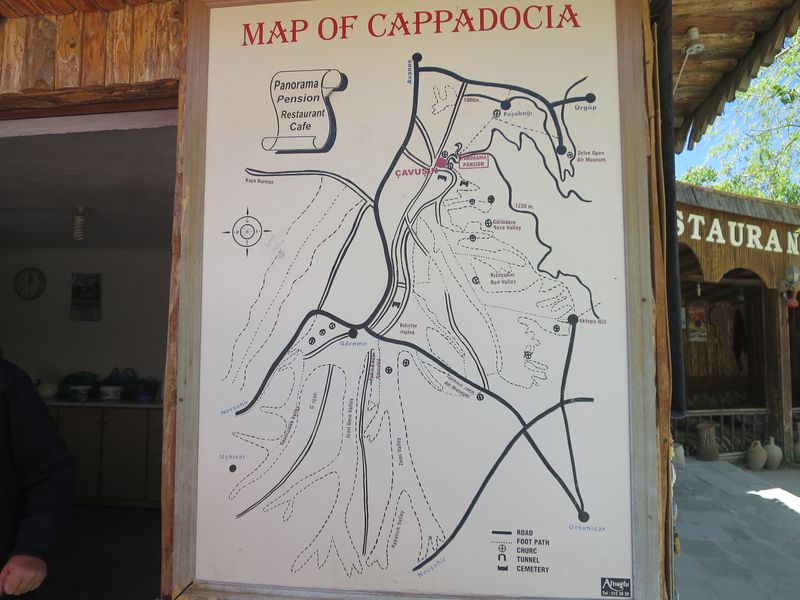呢幾但嘅行山地圖……
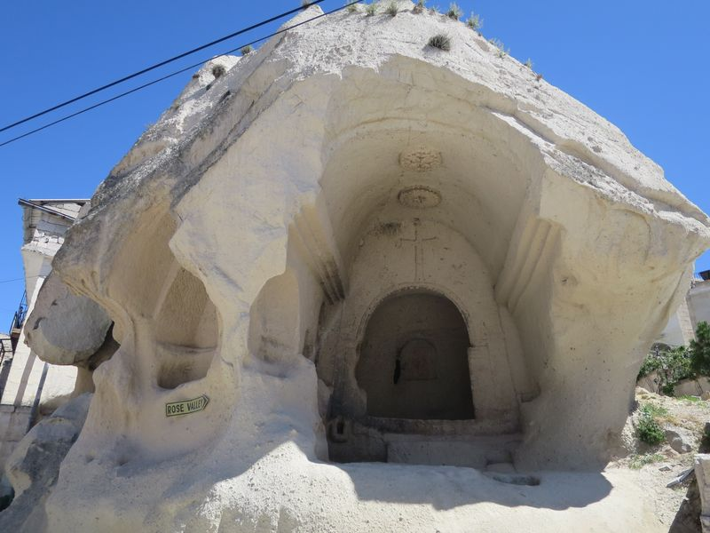

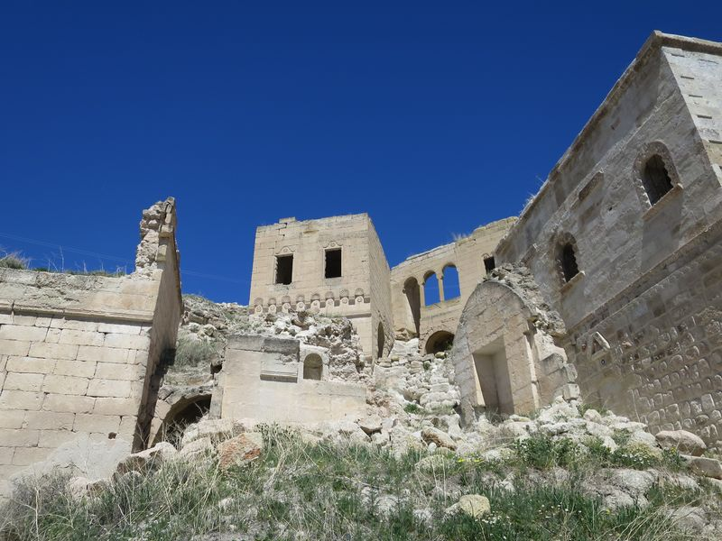
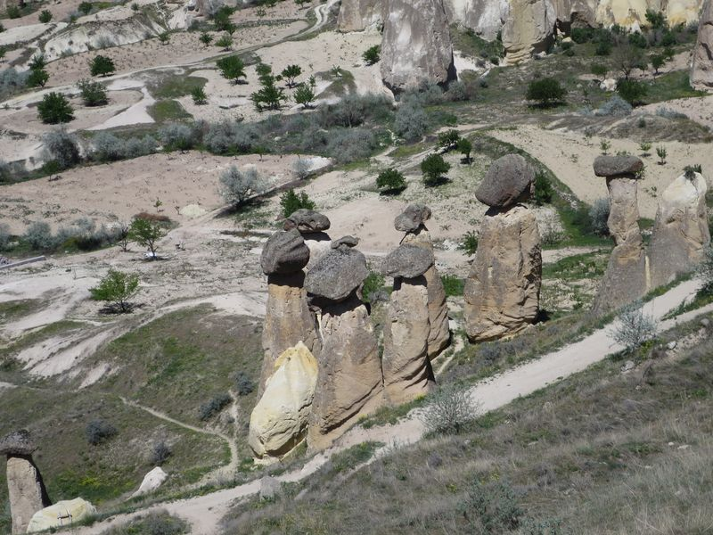
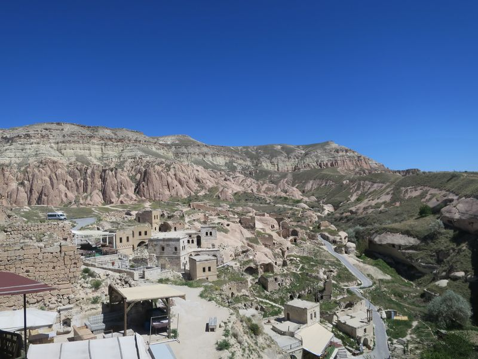
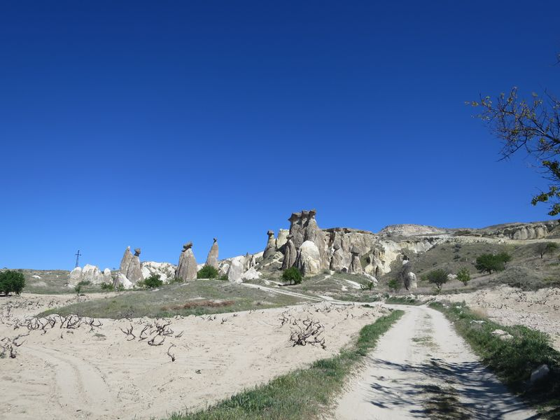Pasabag (Monks Valley)
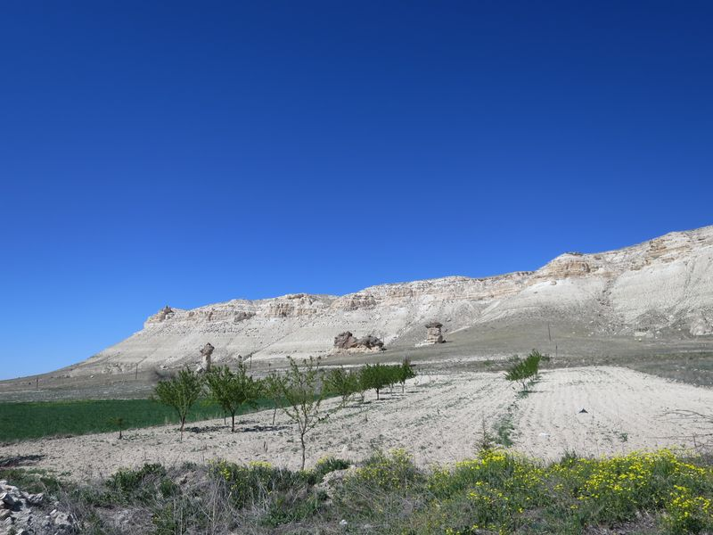
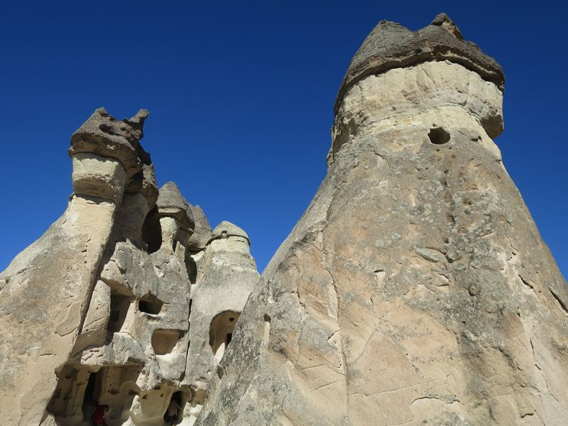
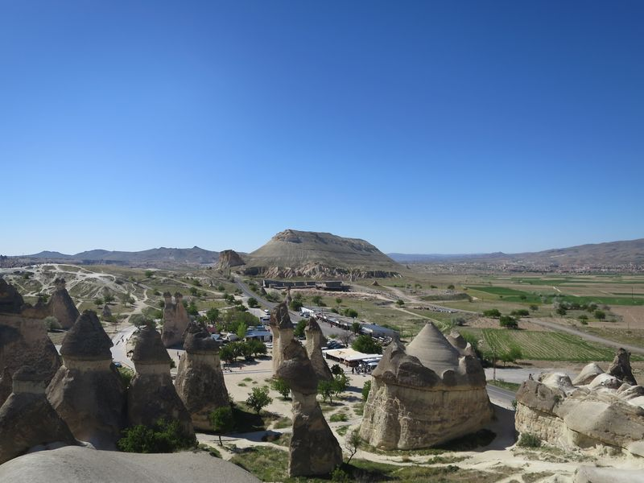
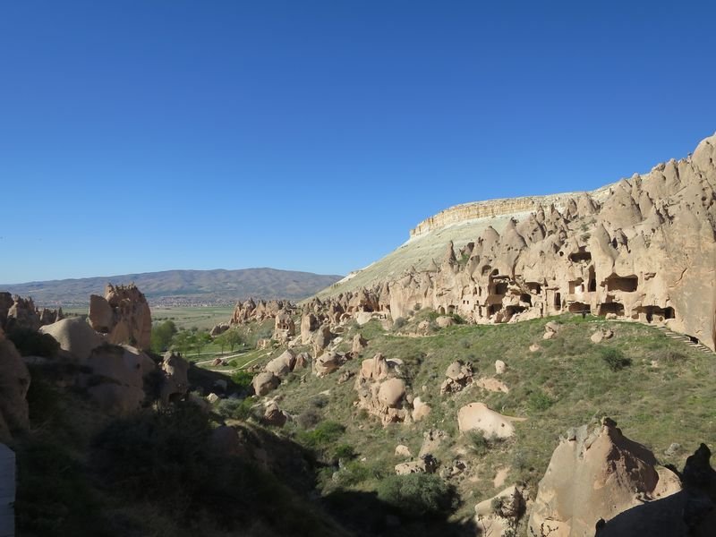Zelve Open Air Museum
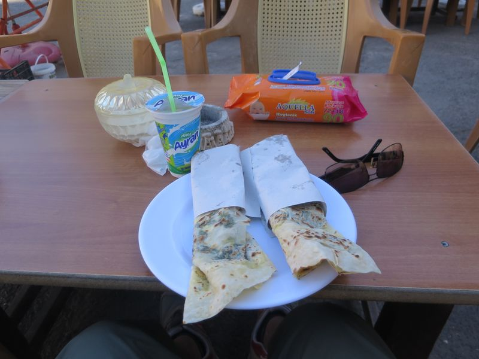
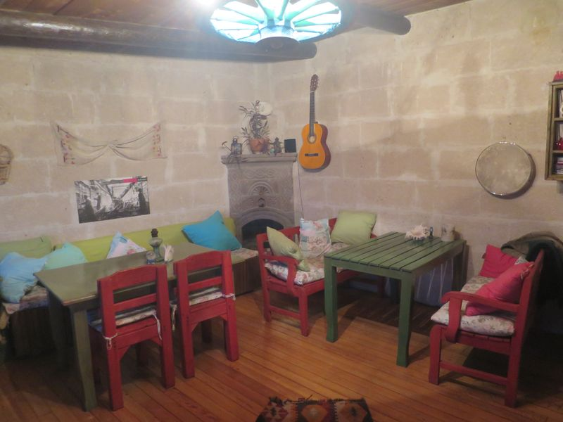
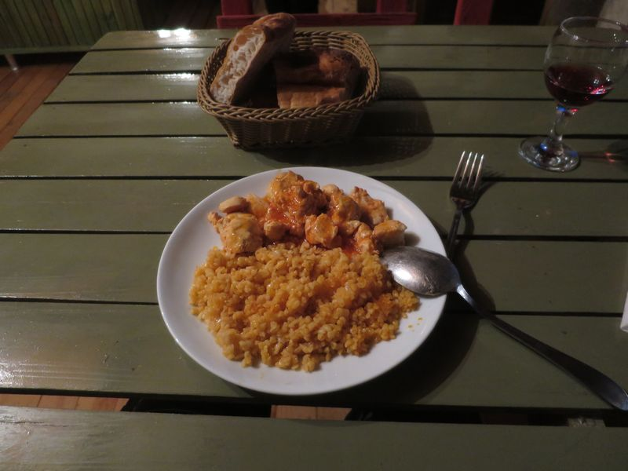
2016 Turkey ❮ Previous Next ❯